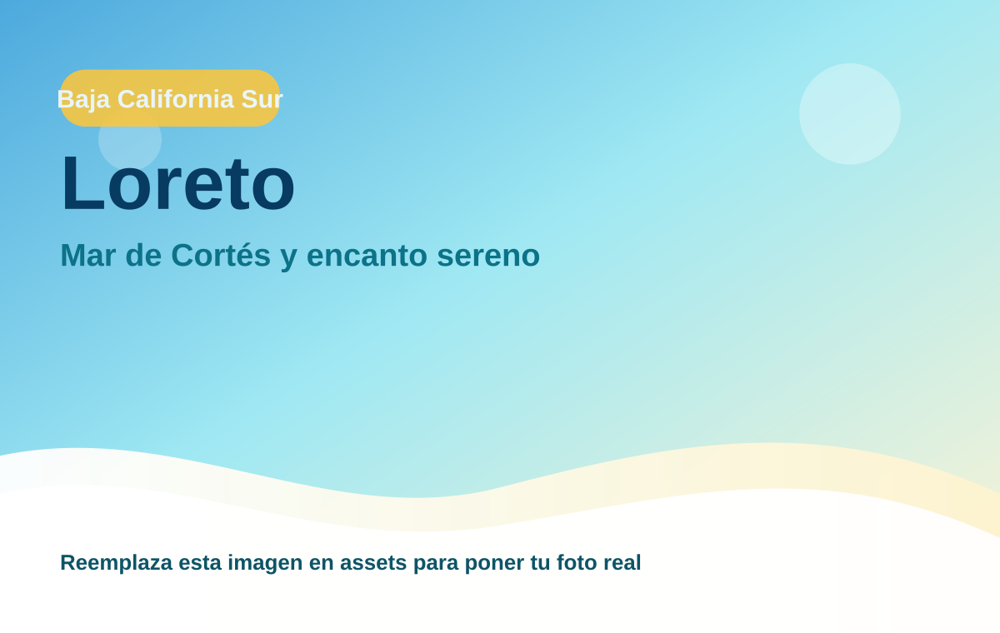
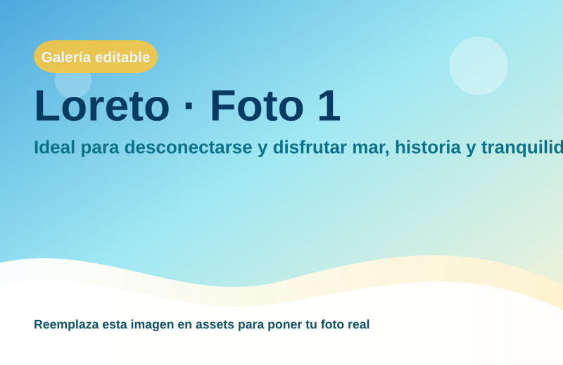
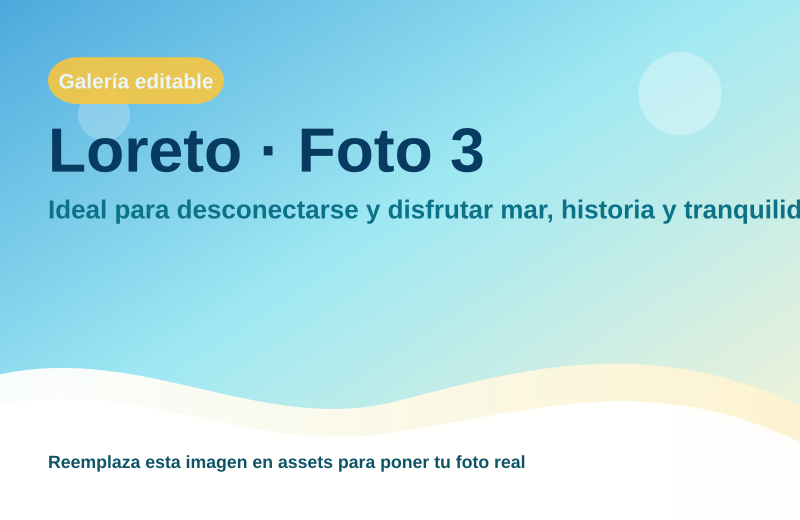

Loreto
Ideal para desconectarse y disfrutar mar, historia y tranquilidad.

Naturaleza, calma y experiencias auténticas
Región: Baja California Sur
Ideal para: Mar de Cortés y encanto sereno
Usa esta ficha como base rápida. Puedes imprimirla en PDF desde el navegador o compartir el enlace.

